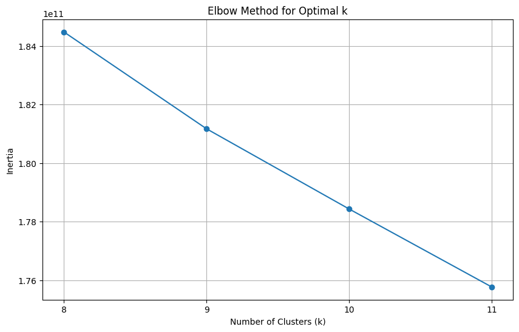

This notebook is part of the practical coursework in the KDD Course Lab at the Arab International University (AIU).
Student: MHD ZAID AL NAHHAS Instructor: Eng. RAGHAD ARAB
The focus of this lab is on applying unsupervised learning techniques to a dataset that we treat as unlabeled. Instead of reusing the same examples from previous labs, we will use the MNIST Handwritten Digits dataset. This dataset contains 70,000 grayscale images of handwritten digits (0–9). Although it comes with labels, we will ignore them in this project. This allows us to perform clustering to group similar-looking digits together without knowing their labels in advance.
In this project, we aim to achieve the following:
We'll begin by loading the MNIST dataset, which consists of 70,000 images of handwritten digits. We'll treat this dataset as unlabeled for our clustering task.
from sklearn.datasets import fetch_openml
# Load the dataset
X, y = fetch_openml('mnist_784', version=1, return_X_y=True, as_frame=False)
print("Dataset loaded successfully.")
print("Shape of data (X):", X.shape)
print("Shape of labels (y):", y.shape)Dataset loaded successfully.
Shape of data (X): (70000, 784)
Shape of labels (y): (70000,)
With the MNIST dataset loaded, we can now train a KMeans clustering model. KMeans is an unsupervised learning algorithm that partitions data into k distinct clusters. Since we are treating this dataset as unlabeled, KMeans will group the images based on their visual similarity. We'll start by choosing an arbitrary number of clusters for now, and later use the elbow method to find a more optimal value.
from sklearn.cluster import KMeans
kmeans = KMeans(n_clusters=10, random_state=42, n_init=10)
kmeans.fit(X)
print("KMeans model trained successfully.")
print("Cluster centers shape:", kmeans.cluster_centers_.shape)KMeans model trained successfully.
Cluster centers shape: (10, 784)
To determine the optimal number of clusters, we will use the elbow method. This involves fitting the KMeans model with a range of cluster numbers and calculating the inertia (within-cluster sum of squares) for each. The inertia tends to decrease as the number of clusters increases, and the "elbow point" in the plot of inertia versus the number of clusters indicates a point where the decrease slows down significantly, suggesting an optimal number of clusters.
inertia = []
k_range = range(8, 12)
for k in k_range:
kmeans_k = KMeans(n_clusters=k, random_state=42, n_init=10)
kmeans_k.fit(X)
inertia.append(kmeans_k.inertia_)
print("Inertia calculated for k values from 8 to 12.")Inertia calculated for k values from 8 to 12.
We will now plot the inertia values we calculated against the number of clusters. Look for a point in the plot where the rate of decrease in inertia sharply changes, forming an "elbow". This point often suggests a reasonable number of clusters for the data.
import matplotlib.pyplot as plt
plt.figure(figsize=(10, 6))
plt.plot(k_range, inertia, marker='o')
plt.title('Elbow Method for Optimal k')
plt.xlabel('Number of Clusters (k)')
plt.ylabel('Inertia')
plt.xticks(k_range)
plt.grid(True)
plt.show()
from sklearn.metrics import silhouette_score
optimal_k = 10
kmeans_optimal = KMeans(n_clusters=optimal_k, random_state=42, n_init=10)
kmeans_optimal.fit(X)
silhouette_avg = silhouette_score(X, kmeans_optimal.labels_)
print(f"Silhouette Score for k = {optimal_k}: {silhouette_avg}")Silhouette Score for k = 10: 0.0586915389505002